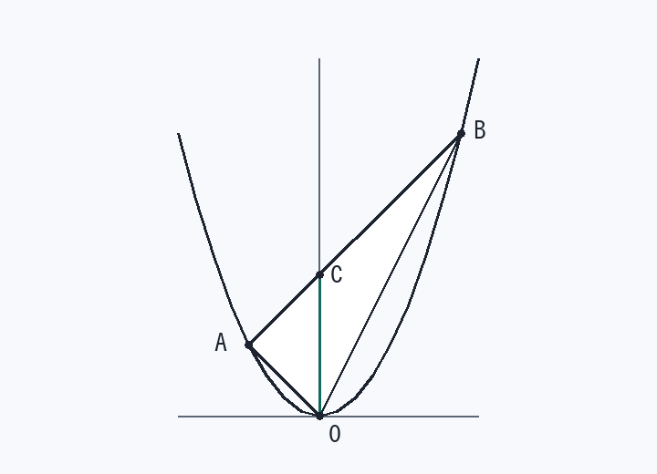

第9回 放物線と直線でできる三角形の面積
放物線 y = x² と直線 y = x + 2 は2点 A, B で交わる。原点を O とするとき、△OAB の面積を求めなさい。

解法の型
面積 = ½ ×（y切片 OC）×（2交点の x の差）
y軸で三角形を2つに切り、OC を共通の底辺と見るのが定番です。
解答手順
- 連立して交点x² = x + 2 → x² − x − 2 = 0 → (x − 2)(x + 1) = 0 → x = 2, −1
y は y = x² に代入するほうが速い → A(−1, 1)、B(2, 4)。
- y切片を出すy = x + 2 に x = 0 → C(0, 2)、OC = 2
- OC で2つに分ける△OCA = ½ × 2 × 1 = 1 ／ △OCB = ½ × 2 × 2 = 2
高さは「y軸までの距離」＝ x座標の絶対値です。
- 足す1 + 2 = 3 （= ½ × 2 × {2 − (−1)}）
検算：原点を頂点とする三角形の公式 S = ½|x₁y₂ − x₂y₁| でも ½|(−1)(4) − (2)(1)| = ½ × 6 = 3 で一致します。
差がつく2行
- 交点の x は解と係数の関係でも扱える（和 1、積 −2 → 差² = 1 + 8 = 9 → 差 3）。
- 三角形の頂点が原点でないときも、y軸（または x軸）と平行な線で切るのは同じ。切った線の長さが底辺になります。
覚えるべきこと（在庫に入れる1行）
△OAB = ½ ×（y切片）×（x の差）
類題（翌日、何も見ずに）
- y = x² と y = 2x + 3 の交点を A, B とするときの △OAB
答え
交点 x = −1, 3、y切片 3 → ½ × 3 × 4 = 6
- y = x² と y = x + 6 の交点を A, B とするときの △OAB
答え
交点 x = −2, 3、y切片 6 → ½ × 6 × 5 = 15
- y = x² と y = x + 2 の交点 A, B と点 C(0, 2) を使った △ACB の面積
答え
C は直線上の点なので A, B, C は一直線 → 三角形にならず面積 0